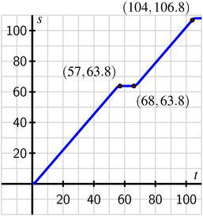
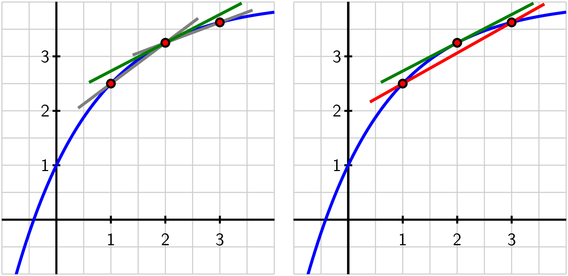
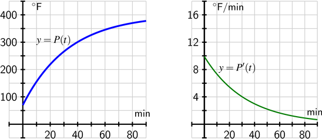

Section1.5Interpreting, estimating, and using the derivative¶ permalink
{In this section, we strive to understand the ideas generated by the following important questions:
In contexts other than the position of a moving object, what does the derivative of a function measure?
What are the units on the derivative function \(f'\), and how are they related to the units of the original function \(f\)?
What is a central difference, and how can one be used to estimate the value of the derivative at a point from given function data?
Given the value of the derivative of a function at a point, what can we infer about how the value of the function changes nearby?
}
Subsection1.5.1Introduction
An interesting and powerful feature of mathematics is that it can often be thought of both in abstract terms and in applied ones. For instance, calculus can be developed almost entirely as an abstract collection of ideas that focus on properties of arbitrary functions. At the same time, calculus can also be very directly connected to our experience of physical reality by considering functions that represent meaningful processes. We have already seen that for a position function \(y = s(t)\), say for a ball being tossed straight up in the air, the ball's velocity at time \(t\) is given by \(v(t) = s'(t)\), the derivative of the position function. Further, recall that if \(s(t)\) is measured in feet at time \(t\), the units on \(v(t) = s'(t)\) are feet per second.
In what follows in this section, we investigate several different functions, each with specific physical meaning, and think about how the units on the independent variable, dependent variable, and the derivative function add to our understanding. To start, we consider the familiar problem of a position function of a moving object.
Preview Activity
One of the longest stretches of straight (and flat) road in North America can be found on the Great Plains in the state of North Dakota on state highway 46, which lies just south of the interstate highway I-94 and runs through the town of Gackle. A car leaves town (at time \(t = 0\)) and heads east on highway 46; its position in miles from Gackle at time \(t\) in minutes is given by the graph of the function in Figure 1.5.1. Three important points are labeled on the graph; where the curve looks linear, assume that it is indeed a straight line.
Figure1.5.1The graph of \(y = s(t)\), the position of the car along highway 46, which tells its distance in miles from Gackle, ND, at time \(t\) in minutes.
In everyday language, describe the behavior of the car over the provided time interval. In particular, discuss what is happening on the time intervals \([57,68]\) and \([68,104]\).
Find the slope of the line between the points \((57,63.8)\) and \((104,106.8)\). What are the units on this slope? What does the slope represent?
Find the average rate of change of the car's position on the interval \([68,104]\). Include units on your answer.
Estimate the instantaneous rate of change of the car's position at the moment \(t = 80\). Write a sentence to explain your reasoning and the meaning of this value.
Subsection1.5.2Units of the derivative function
As we now know, the derivative of the function \(f\) at a fixed value \(x\) is given by
and this value has several different interpretations. If we set \(x = a\), one meaning of \(f'(a)\) is the slope of the tangent line at the point \((a,f(a))\).
In alternate notation, we also sometimes equivalently write \(\frac{df}{dx}\) or \(\frac{dy}{dx}\) instead of \(f'(x)\), and these notations helps us to further see the units (and thus the meaning) of the derivative as it is viewed as the instantaneous rate of change of \(f\) with respect to \(x\)\knownindex{\lt main>instantaneous rate of change\lt /main>}. Note that the units on the slope of the secant line, \(\frac{f(x+h)-f(x)}{h}\), are “units of \(f\) per unit of \(x\).” Thus, when we take the limit to get \(f'(x)\), we get these same units on the derivative \(f'(x)\): units of \(f\) per unit of \(x\). Regardless of the function \(f\) under consideration (and regardless of the variables being used), it is helpful to remember that the units on the derivative function are “units of output per unit of input,” in terms of the input and output of the original function.
For example, say that we have a function \(y = P(t)\), where \(P\) measures the population of a city (in thousands) at the start of year \(t\) (where \(t = 0\) corresponds to 2010 AD), and we are told that \(P'(2) = 21.37\). What is the meaning of this value? Well, since \(P\) is measured in thousands and \(t\) is measured in years, we can say that the instantaneous rate of change of the city's population with respect to time at the start of 2012 is 21.37 thousand people per year. We therefore expect that in the coming year, about 21,370 people will be added to the city's population.
Subsection1.5.3Toward more accurate derivative estimates
It is also helpful to recall, as we first experienced in Section 1.3, that when we want to estimate the value of \(f'(x)\) at a given \(x\), we can use the difference quotient \knownindex{\lt main>difference quotient\lt /main>} \(\frac{f(x+h)-f(x)}{h}\) with a relatively small value of \(h\). In doing so, we should use both positive and negative values of \(h\) in order to make sure we account for the behavior of the function on both sides of the point of interest. To that end, we consider the following brief example to demonstrate the notion of a central difference and its role in estimating derivatives.
Suppose that \(y = f(x)\) is a function for which three values are known: \(f(1) = 2.5\), \(f(2) = 3.25\), and \(f(3) = 3.625\). Estimate \(f'(2)\).
Solution.
We know that \(f'(2) = \lim_{h \to 0} \frac{f(2+h) - f(2)}{h}\). But since we don't have a graph for \(y = f(x)\) nor a formula for the function, we can neither sketch a tangent line nor evaluate the limit exactly. We can't even use smaller and smaller values of \(h\) to estimate the limit. Instead, we have just two choices: using \(h = -1\) or \(h = 1\), depending on which point we pair with \((2,3.25)\).
Since the first approximation looks only backward from the point \((2,3.25)\) and the second approximation looks only forward from \((2,3.25)\), it makes sense to average these two values in order to account for behavior on both sides of the point of interest. Doing so, we find that
The intuitive approach to average the two estimates found in Example 1.5.2 is in fact the best possible estimate to \(f'(2)\) when we have just two function values for \(f\) on opposite sides of the point of interest.
Figure1.5.3At left, the graph of \(y = f(x)\) along with the secant line through \((1,2.5)\) and \((2,3.25)\), the secant line through \((2, 3.25)\) and \((3,3.625)\), as well as the tangent line. At right, the same graph along with the secant line through \((1,2.5)\) and \((3,3.625)\), plus the tangent line.
To see why, we think about the diagram in Figure 1.5.3, which shows
a possible function \(y = f(x)\) that satisfies the data given in Example 1.5.2. On the left, we see the two secant lines with slopes that come from computing the backward difference \knownindex{\lt main>backward difference\lt /main>} \(\frac{f(1)-f(2)}{1-2} = 0.75\) and from the forward difference \knownindex{\lt main>forward difference\lt /main>} \(\frac{f(3)-f(2)}{3-2} = 0.375.\) Note how the first such line's slope over-estimates the slope of the tangent line at \((2,f(2))\), while the second line's slope underestimates \(f'(2)\). On the right, however, we see the secant line whose slope is given by the central difference \knownindex{\lt main>central difference\lt /main>}
Note that this central difference has the exact same value as the average of the forward difference and backward difference (and it is straightforward to explain why this always holds), and moreover that the central difference yields a very good approximation to the derivative's value, in part because the secant line that uses both a point before and after the point of tangency yields a line that is closer to being parallel to the tangent line.
In general, the central difference approximation to the value of the first derivative is given by
\[
f'(a) \approx \frac{f(a+h) - f(a-h)}{2h},
\]
and this quantity measures the slope of the secant line to \(y = f(x)\) through the points \((a-h, f(a-h))\) and \((a+h, f(a+h))\). Anytime we have symmetric data surrounding a point at which we desire to estimate the derivative, the central difference is an ideal choice for so doing.
The following activities will further explore the meaning of the derivative in several different contexts while also viewing the derivative from graphical, numerical, and algebraic perspectives.
A potato is placed in an oven, and the potato's temperature \(F\) (in degrees Fahrenheit) at various points in time is taken and recorded in the following table. Time \(t\) is measured in minutes.
Use a central difference to estimate the instantaneous rate of change of the temperature of the potato at \(t= 30\). Include units on your answer.
Use a central difference to estimate the instantaneous rate of change of the temperature of the potato at \(t= 60\). Include units on your answer.
Without doing any calculation, which do you expect to be greater: \(F'(75)\) or \(F'(90)\)? Why?
Suppose it is given that \(F(64) = 330.28\) and \(F'(64) = 1.341\). What are the units on these two quantities? What do you expect the temperature of the potato to be when \(t = 65\)? when \(t = 66\)? Why?
Write a couple of careful sentences that describe the behavior of the temperature of the potato on the time interval \([0,90]\), as well as the behavior of the instantaneous rate of change of the temperature of the potato on the same time interval.
Using the central difference, we find that
\[
F'(30) \approx \frac{F(45)-F(15)}{45-15} = \frac{296-180.5}{30} = 3.85
\]
degrees per minute.
Using the central difference, we find that
\[
F'(60) \approx \frac{F(75)-F(45)}{45-15} = \frac{342.8-296}{30} = 1.56
\]
degrees per minute.
Over each subsequent time interval, we see that the amount of increase in the potato's temperature gets less and less, thus we expect the value of \(F'(t)\) to get smaller and smaller as time goes on. We therefore expect \(F'(75) > F'(90)\).
The value \(F(64) = 330.28\) is the temperature of the potato in degrees Fahrenheit at time 64, while \(F'(64) = 1.341\) measures the instantaneous rate of change of the potato's temperature with respect to time at the instant \(t = 64\), and its units are degrees per minute. Because at time \(t = 64\) the potato's temperature is increasing at 1.341 degrees per minute, we expect that at \(t = 65\), the temperature will be about 1.341 degrees greater than at \(t = 64\), or in other words \(F(65) \approx 330.28 + 1.341 = 331.621\). Similarly, at \(t = 66\), two minutes have elapsed from \(t = 64\), so we expect an increase of \(2 \dot 1.341\) degrees: \(F(66) \approx 330.28 + 2 \cdot 1.341 = 332.962\).
Throughout the time interval \([0,90]\), the temperature \(F\) of the potato is increasing. But as time goes on, the rate at which the temperature is rising appears to be decreasing. That is, while the values of \(F\) continue to get larger as time progresses, the values of \(F'\) are getting smaller (while still remaining positive). We thus might say that “the temperature of the potato is increasing, but at a decreasing rate.”
A company manufactures rope, and the total cost of producing \(r\) feet of rope is \(C(r)\) dollars.
What does it mean to say that \(C(2000) = 800\)?
What are the units of \(C'(r)\)?
Suppose that \(C(2000) = 800\) and \(C'(2000) = 0.35\). Estimate \(C(2100)\), and justify your estimate by writing at least one sentence that explains your thinking.
Which of the following statements do you think is true, and why?
\(C'(2000) \lt C'(3000)\)
\(C'(2000) = C'(3000)\)
\(C'(2000) > C'(3000)\)
Suppose someone claims that \(C'(5000) = -0.1\). What would the practical meaning of this derivative value tell you about the approximate cost of the next foot of rope? Is this possible? Why or why not?
The total cost of producing 2000 feet of rope is \(\ldots\)
Remember that the units on any derivative are “units of output per unit of input” and that the input here is \(r\) feet.
Since \(C'(2000) = 0.35\) dollars/foot, we expect that for each additional foot of rope, the cost will increase by \(0.35\) dollars.
In manufacturing processes, there is often a decrease in cost per unit as the number of units increases. What does that tell us to expect about the derivative of \(C(r)\)?
If \(C'(5000) = -0.1\), this would tell us that \(C(r)\) is a decreasing function at \(r = 5000\), which means that the total cost to make \(5001\) feet of rope is less than the total cost to make \(5000\) feet of rope. Is this possible?
\(C(2000) = 800\) means that it costs $800 to make 2000 feet of rope.
The units of \(C'(r)\) are “dollars per foot.”
If \(C(2000) = 800\) and \(C'(2000) = 0.35\), then we know once 2000 feet of rope are produced, the total cost function is increasing at $0.35 per additional foot of rope. Then, if we manufacture an additional 100 feet of rope, the additional total cost will be approximately
\[
100 \ \mbox{feet} \cdot 0.35 \ \frac{\mbox{dollars} }{\mbox{foot} } = 35 \ \mbox{dollars} .
\]
Therefore, we find that \(C(2100) \approx C(2000) + 35 = 835,\) or that the cost to make 2100 feet of rope is about $835.
Either \(C'(2000) = C'(3000)\) or \(C'(2000) > C'(3000)\), since we expect the cost per foot of additional rope to either stay constant or to get smaller as the production volume increases. Said differently, the instantaneous rate of change of the total cost function should either be constant or decrease due to economy of scale.
It is impossible to have \(C'(5000) = -0.1\) and indeed to have any negative derivative value for the total cost function. The total cost function \(C(r)\) can never decrease, because it doesn't make sense for the total cost of producing 5001 feet of rope to be less than the total cost of producing 5000 feet of rope.
Researchers at a major car company have found a function that relates gasoline consumption to speed for a particular model of car. In particular, they have determined that the consumption \(C\), in {liters per kilometer}, at a given speed \(s\), is given by a function \(C = f(s)\), where \(s\) is the car's speed in kilometers per hour.
Data provided by the car company tells us that \(f(80) = 0.015\), \(f(90) = 0.02\), and \(f(100) = 0.027\). Use this information to estimate the instantaneous rate of change of fuel consumption with respect to speed at \(s = 90\). Be as accurate as possible, use proper notation, and include units on your answer.
By writing a complete sentence, interpret the meaning (in the context of fuel consumption) of “\(f(80) = 0.015\).”
Write at least one complete sentence that interprets the meaning of the value of \(f'(90)\) that you estimated in (a).
Using a central difference, we have
\[
f'(90) = \frac{f(100) - f(80}{100-80} = \frac{0.027 - 0.015}{20} = \frac{0.012}{20} = 0.0006
\]
which tells us that \(f'(90) = 0.0006\) liters per kilometer per kilometer per hour.
When the car is traveling at 80 kilometers per hour, it is using fuel at a rate of 0.015 liters per kilometer. That is, at the given speed, for each additional kilometer the car travels, it uses an additional 0.015 liters of fuel.
To say that \(f'(90) = 0.0006\) liters per kilometer per kilometer per hour means that when the car is traveling at 90 kilometers per hour, its rate of fuel consumption per kilometer is increasing at a rate of 0.0006 liters per kilometer per kilometer per hour. If we increase our speed from 90 to 91 km/hr, we would expect our rate of fuel consumption to rise by 0.0006 liters for each additional kilometer driven.
In Section 1.4, we learned how use to the graph of a given function \(f\) to plot the graph of its derivative, \(f'\). It is important to remember that when we do so, not only does the scale on the vertical axis often have to change to accurately represent \(f'\), but the units on that axis also differ. For example, suppose that \(P(t) = 400-330e^{-0.03t}\) tells us the temperature in degrees Fahrenheit of a potato in an oven at time \(t\) in minutes. In Figure 1.5.7, we sketch the graph of \(P\) on the left and the graph of \(P'\) on the right.
Figure1.5.7Plot of \(P(t) = 400-330e^{-0.03t}\) at left, and its derivative \(P'(t)\) at right.
Note how not only are the vertical scales different in size, but different in units, as the units of \(P\) are \(^{\circ}\)F, while those of \(P'\) are \(^{\circ}\)F/min. In all cases where we work with functions that have an applied context, it is helpful and instructive to think carefully about units involved and how they further inform the meaning of our computations.
\item Regardless of the context of a given function \(y=f(x)\), the derivative always measures the instantaneous rate of change of the output variable with respect to the input variable.
\item The units on the derivative function \(y = f'(x)\) are units of \(f\) per unit of \(x\). Again, this measures how fast the output of the function \(f\) changes when the input of the function changes.
\item The central difference approximation to the value of the first derivative is given by
\[
f'(a) \approx \frac{f(a+h) - f(a-h)}{2h},
\]
and this quantity measures the slope of the secant line to \(y = f(x)\) through the points \((a-h, f(a-h))\) and \((a+h, f(a+h))\). The central difference generates a good approximation of the derivative's value any time we have symmetric data surrounding a point of interest.
\item Knowing the derivative and function values at a single point enables us to estimate other function values nearby. If, for example, we know that \(f'(7) = 2\), then we know that at \(x = 7\), the function \(f\) is increasing at an instantaneous rate of 2 units of output for every one unit of input. Thus, we expect \(f(8)\) to be approximately 2 units greater than \(f(7)\). The value is approximate because we don't know that the rate of change stays the same as \(x\) changes.
\hrulefill
\begin{exercises}
\item A cup of coffee has its temperature \(F\) (in degrees Fahrenheit) at time \(t\) given by the function \(F(t) = 75 + 110 e^{-0.05t}\), where time is measured in minutes.
Use a central difference with \(h = 0.01\) to estimate the value of \(F'(10)\).
What are the units on the value of \(F'(10)\) that you computed in (a)? What is the practical meaning of the value of \(F'(10)\)?
Which do you expect to be greater: \(F'(10)\) or \(F'(20)\)? Why?
Write a sentence that describes the behavior of the function \(y = F'(t)\) on the time interval \(0 \le t \le 30\). How do you think its graph will look? Why?
\item The temperature change \(T\) (in Fahrenheit degrees), in a patient, that is generated by a dose \(q\) (in milliliters), of a drug, is given by the function \(T = f(q)\).
What does it mean to say \(f(50) = 0.75\)? Write a complete sentence to explain, using correct units.
A person's sensitivity, \(s\), to the drug is defined by the function \(s(q) = f'(q)\). What are the units of sensitivity?
Suppose that \(f'(50) = -0.02\). Write a complete sentence to explain the meaning of this value. Include in your response the information given in (a).
\item The velocity of a ball that has been tossed vertically in the air is given by \(v(t) = 16 - 32t\), where \(v\) is measured in feet per second, and \(t\) is measured in seconds. The ball is in the air from \(t = 0\) until \(t = 2\).
When is the ball's velocity greatest?
Determine the value of \(v'(1)\). Justify your thinking.
What are the units on the value of \(v'(1)\)? What does this value and the corresponding units tell you about the behavior of the ball at time \(t = 1\)?
What is the physical meaning of the function \(v'(t)\)?
\item The value, \(V\), of a particular automobile (in dollars) depends on the number of miles, \(m\), the car has been driven, according to the function \(V = h(m)\).
Suppose that \(h(40000) = 15500\) and \(h(55000) = 13200\). What is the average rate of change of \(h\) on the interval \([40000,55000]\), and what are the units on this value?
In addition to the information given in (a), say that \(h(70000) = 11100\). Determine the best possible estimate of \(h'(55000)\) and write one sentence to explain the meaning of your result, including units on your answer.
Which value do you expect to be greater: \(h'(30000)\) or \(h'(80000)\)? Why?
Write a sentence to describe the long-term behavior of the function \(V = h(m)\), plus another sentence to describe the long-term behavior of \(h'(m)\). Provide your discussion in practical terms regarding the value of the car and the rate at which that value is changing.